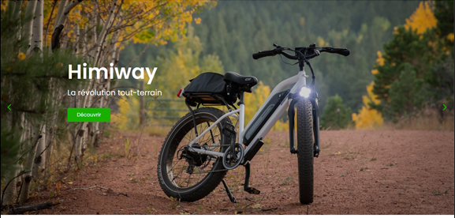

Projets
Quelques projets réalisés en formation.
Premiers pas sur le langage HTML-site: Riding Cities, actualisation du site d'une association de skate board.
 Voir sur GitHub
Voir sur GitHub
Créez la page d'accueil d'une agence de voyage avec HTML & CSS - site Booki, site de réservation en ligne.
Voir sur GitHub
Personnalisez un thème WordPress pour une startup avec HTML, CSS et PHP - site PLANTY.
Voir sur GitHubOptimisez un site WordPress existant pour une marque de vêtements - site Chic Dressing.
 Voir sur GitHub
Voir sur GitHub

Améliorez le site d'un studio d'animation avec JavaScript et des animations CSS - site Studio Koukaki.
Voir sur GitHubDébuggez et testez un site WordPress d'outillage médical - site MED.IT.
Voir sur GitHubCréez un site WordPress complexe pour une photographe freelance - site NATHALIE MOTA.
 Voir sur GitHub
Voir sur GitHub
Planifiez le développement d'un site de vente de vélos électriques - site Emoving.
 Voir sur GitHub
Quelques projets que j'ai réalisés personnellement.


À propos
Je suis un développeur web avec une petite experience.
Je suis un développeur web en début de carrière avec une petite mais solide expérience dans la création de sites web modernes et interactifs. Passionné par le code et toujours curieux d'en apprendre davantage, j'aime relever de nouveaux défis techniques et résoudre des problèmes complexes. Mes compétences incluent le développement front-end avec HTML, CSS et JavaScript, ainsi que l'intégration de solutions basées sur WordPress. Grâce à mon engagement à produire des sites performants et ergonomiques, j'ai eu l'occasion de participer à plusieurs projets enrichissants. Je cherche constamment à améliorer mes compétences et à explorer de nouvelles technologies. Mon objectif est de créer des expériences web dynamiques qui répondent aux besoins des utilisateurs tout en respectant les meilleures pratiques.
je suis toujours à la recherche de nouveaux défis et d’opportunités pour affiner mes compétences. J’aime transformer des idées en expériences web performantes et ergonomiques. Mon objectif est d’apporter des solutions adaptées aux besoins des utilisateurs tout en restant à la pointe des innovations technologiques.
Mon expérience, bien que modeste, m’a permis de collaborer sur des projets variés, allant de la création de sites vitrines à l’intégration de fonctionnalités dynamiques. Curieux et autodidacte, je m’efforce d’être à jour sur les dernières tendances et innovations technologiques, afin d’offrir des solutions optimisées, tant pour la performance que pour l’expérience utilisateur. Mon approche est centrée sur l’ergonomie, la fonctionnalité et la satisfaction client. Je suis convaincu que l’apprentissage continu et la persévérance sont les clés du succès dans ce domaine en constante évolution. Mon objectif à long terme est de devenir un expert reconnu dans le développement web tout en continuant à apprendre et à grandir dans cette passionnante industrie.

Compétences
Contact
Contactez-moi via le formulaire ci-dessous.